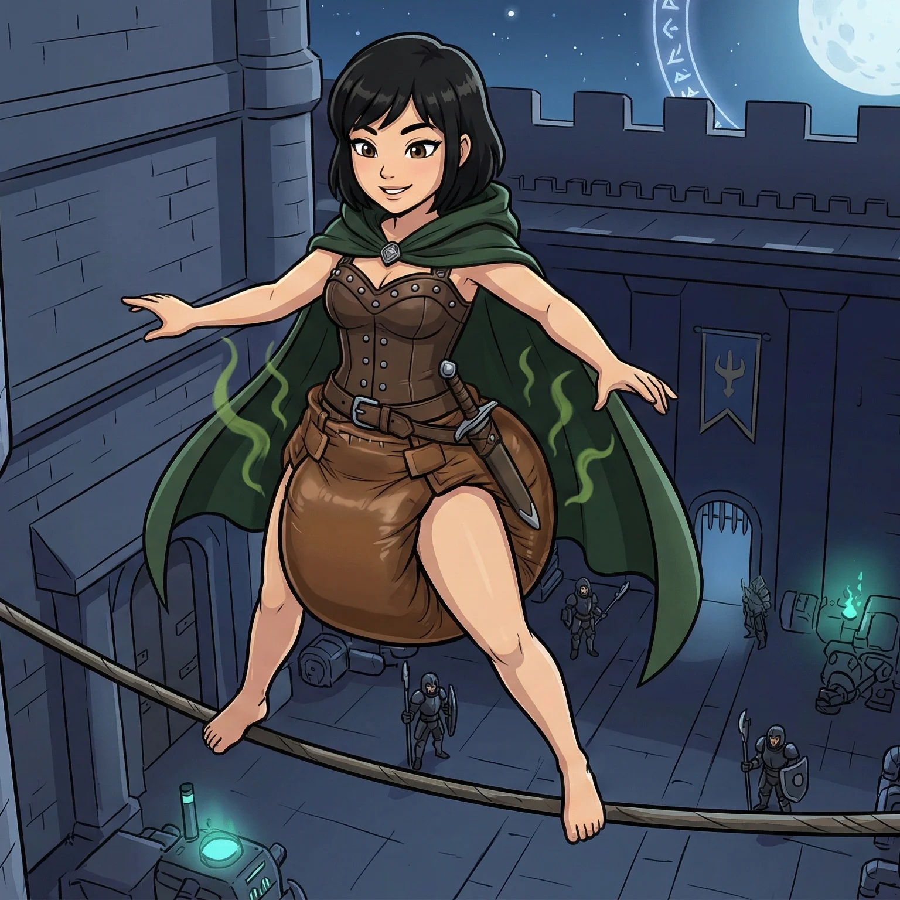
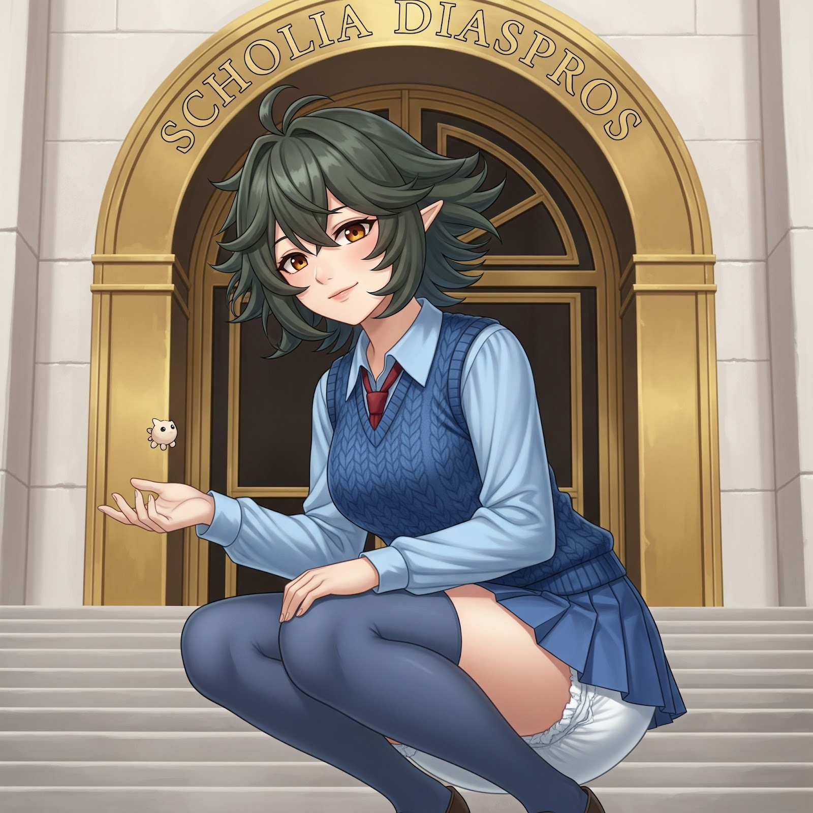
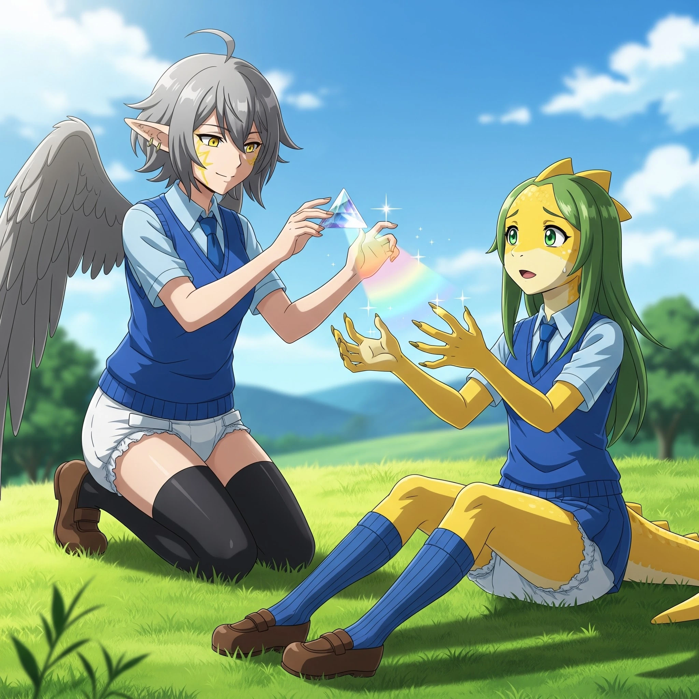
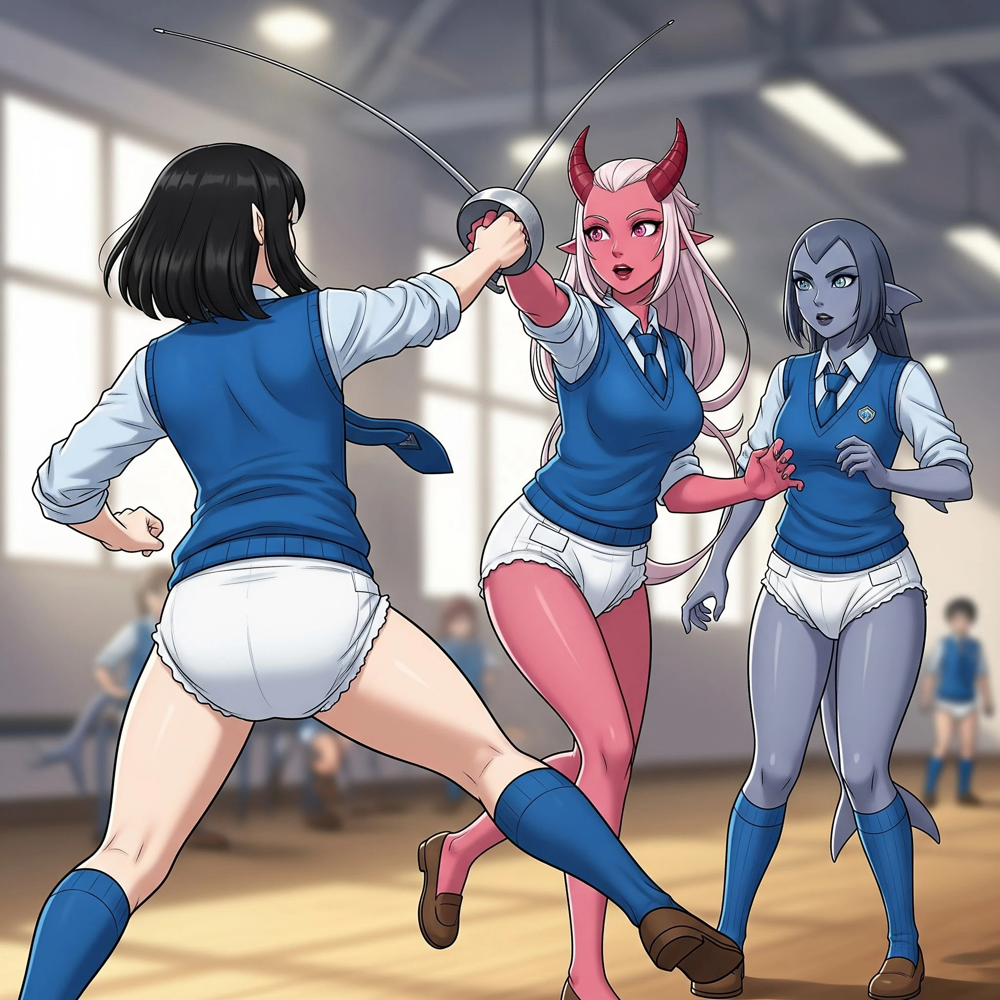
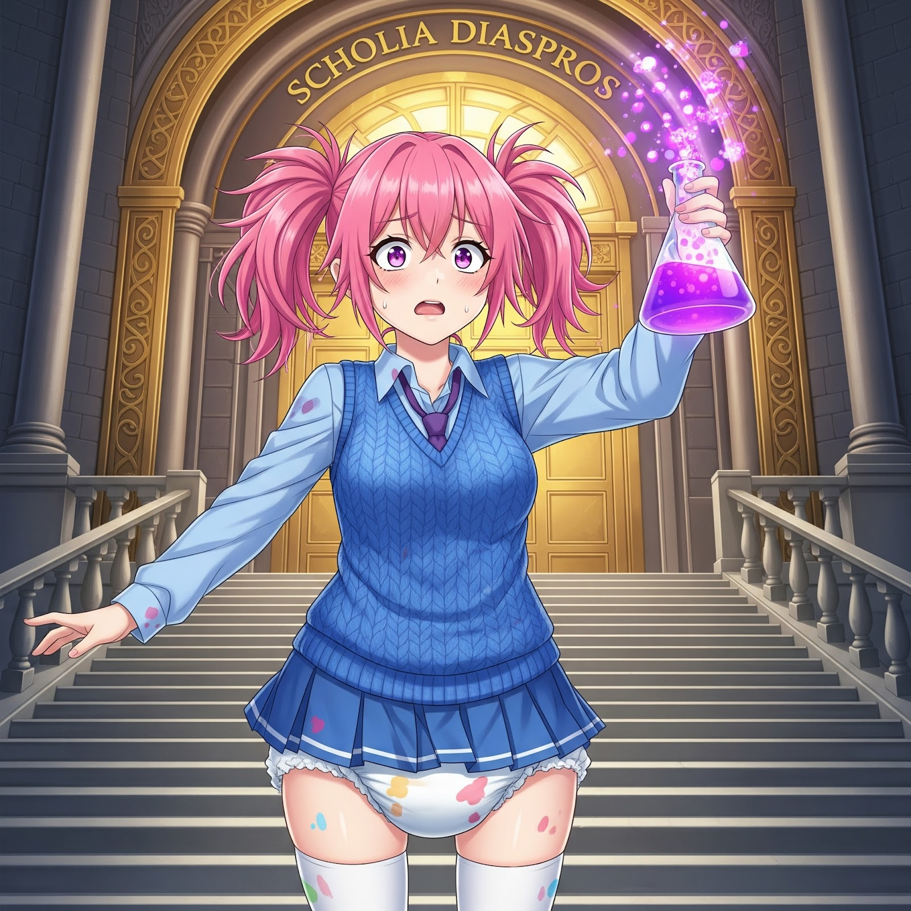

Scholia Diaspros
Origin Feats
A collection of new Origin Feats tailored for the Diaper School setting. These feats can be chosen by players to reflect their character's unique history, talents, or unfortunate circumstances within the academy.
Forever Small
Whether due to a quirk of magic, a minor curse, or simply genetics, you never quite had that growth spurt. You're destined to navigate the world from a lower perspective, which has its own unique advantages and challenges.
- Your size is Small, regardless of your race's normal size.
- You gain a +1 bonus to your Armor Class.
- You have advantage on Dexterity (Stealth) checks.
- You can move through the space of any creature that is of a size larger than yours.
- You have disadvantage on Strength (Athletics) checks made to shove or grapple creatures larger than you.
- Any weapon with the "heavy" property is wielded with disadvantage.
- You gain the Incontinent trait. This condition can be overcome with dedicated potty-training efforts during downtime.

Diaper-Mastery
Prerequisite: Possession of the Incontinent trait.
- Constitution Boost: Your dedication (or misfortune) in mastering diaper management increases your Constitution by 2.
- Relief Bonus: When you roll a 1 on a Continence Check or successfully fill your diaper without leaking, you gain a +1 Relief Bonus to all rolls for the next 1 minute (10 rounds).
- Enhanced Sensitivity: You gain advantage on Insight and Investigation checks that relate to diaper conditions. Furthermore, you may track any diapered creature via your Survival skill, even without traditional training in it.
- Combat Adaptation: In combat, aside from suffering the effects of a Leaking Diaper, you are no longer penalized by a full or messy diaper.
- Social Perk: When your diaper is in a messy state, you gain advantage on Persuasion checks—but only if these checks are not used to mask the true state of your maturity or odor.
Padding Tsundere
"It's not like I LIKE wearing these, okay?! They're just... practical! And comfortable! But that doesn't mean anything, baka!"
You have a complicated relationship with diapers. Your effectiveness is tied to this internal conflict, swinging between frustrated embarrassment and secret, confident enjoyment.
- When your diaper is clean, you gain all the benefits of the Diaper-Mastery feat.
- When your diaper is soiled, you lose the benefits of the Diaper-Mastery feat and suffer a -1 penalty to all attack rolls, ability checks, and saving throws.
- While your diaper is soiled, you can use a bonus action to find a moment of private enjoyment. Make a Charisma (Deception) or Dexterity (Sleight of Hand) check contested by the passive Wisdom (Perception) of any onlookers. On a success, the penalty is replaced with a +2 bonus to all rolls until your next change, and you regain the Diaper-Mastery benefits. On a failure, the penalty remains.
Padded Professor in Training
You've always been a bookworm, more interested in the theory of magical diapers than their practical application. You're a fountain of knowledge on everything from proper folding techniques to the arcane principles of absorbency.
- Increase your Intelligence or Wisdom score by 1, to a maximum of 20.
- You gain proficiency in two of the following skills: Arcana, History, Investigation, or Medicine.
- You have advantage on any ability check made to recall lore about the Academy's history, its staff, or the properties of various types of mundane or magical diapers.
- You learn the Little Miracle cantrip and one other cantrip of your choice from the wizard or cleric spell list.
Born Brat
Rules were made to be bent, broken, or blamed on someone else. You've been getting your way since you were in pull-ups, and you've elevated whining and manipulation to a high art form.
- Increase your Charisma score by 1, to a maximum of 20.
- You gain proficiency in the Deception and Persuasion skills.
- You have advantage on Charisma (Persuasion) checks made to get out of trouble or punishments, and on Charisma (Deception) checks made to shift blame for your misdeeds onto another creature.
- When a creature attempts to punish you, you can use your reaction to make a contested Charisma (Persuasion) check against their Wisdom (Insight). On a success, the severity of your punishment is halved. You can't use this feature again until you finish a long rest.
.webp)
Bratty Brawler
"You grew up relying on a good old tantrum, brute force and animal cunning. The rigid discipline of the Academy is a thin veneer over a core of pure, wild strength."
- Increase your Strength score by 1, to a maximum of 20.
- You gain expertise in the Athletics skill (doubling your proficiency bonus).
- You have advantage on checks to resist being moved or knocked prone.
- You learn the Primal Savagery cantrip (Constitution is your spellcasting ability for it).

Darkling Whisperer
You see a strange sort of logic in the shadows, a hidden beauty in the darklings that others dismiss as monsters. This connection grants you a unique, if unsettling, edge.
- Increase your Wisdom or Charisma score by 1, to a maximum of 20.
- You have advantage on Wisdom (Animal Handling) and Wisdom (Insight) checks when interacting with monstrosities and aberrations, including Darklings.
- You can communicate simple ideas to Darklings through non-verbal cues and guttural sounds.
- You can cast Animal Friendship at will, but only on beasts and monstrosities with an Intelligence score of 5 or lower.
Chronal Hiccup
Time is more of a suggestion for you. This temporal instability is confusing, but it sometimes works in your favor, letting you rewind a clumsy moment or get a brief glimpse of what's next.
- Increase your Dexterity or Intelligence score by 1, to a maximum of 20.
- You gain a +5 bonus to your initiative rolls.
- When you or a creature you can see within 30 feet of you makes an attack roll, an ability check, or a saving throw, you can use your reaction to give that roll advantage or disadvantage. You can't use this feature again until you finish a short or long rest.
Potty-Trained Paragon
You stand as a bastion of bladder control in a world awash with accidents. Your discipline and training have given you a resilience that the padded populace can only dream of.
- You are considered Potty-Trained and have advantage against effects that would magically inflict the Incontinent trait.
- You have advantage on Continence Checks made under duress (such as from extreme stress or magical compulsion).
- Once per long rest, when you fail a saving throw against an effect that would cause you to have an "accident", you can choose to succeed instead.
Wellspring Resilience
You survived the energies of the Well of Souls, and its humming, spectral power has left a permanent mark on you, making you unnervingly resilient to forces that affect the mind and spirit.
- Increase your Constitution or Charisma score by 1, to a maximum of 20.
- You have advantage on saving throws against being charmed or frightened, and you have resistance to psychic damage.
- You learn one cantrip of your choice from the Sorcerer or Warlock spell list. Your spellcasting ability for this cantrip is Charisma.
Rulebender
You used to be the law. Now you're the loophole. Your intimate knowledge of the academy's regulations and physical layout makes you exceptionally good at navigating both.
- Increase your Intelligence or Dexterity score by 1, to a maximum of 20.
- You gain proficiency in the Investigation and Stealth skills.
- You have advantage on checks made to find secret passages, hidden compartments, or notice unusual details within the academy's campus.
- Once per long rest, you can automatically succeed on one Dexterity (Stealth) check made to hide from or move silently past academy staff or monitors.

Cultural Liaison
Your travels and embassy ties taught you how to smooth introductions and navigate unfamiliar customs without giving offense.
- Increase your Charisma or Intelligence score by 1, to a maximum of 20.
- You gain proficiency in Persuasion and learn one additional language of your choice.
- You can speak two extra languages of your choice.
- You have advantage on Charisma (Persuasion) checks made to request modest hospitality, referrals, or introductions from cultural clubs, diplomats, or visiting scholars.
- Once per long rest, when you fail a Charisma (Persuasion) check, you can reroll it.

Stacks Savant
The library breathes around you; indices, marginalia, and cross-references reveal what others miss.
- Increase your Intelligence score by 1, to a maximum of 20.
- You gain proficiency in Investigation. If you already have it, you instead gain expertise in Investigation (double your proficiency bonus).
- You can speak two extra languages of your choice.
- When researching, you complete tasks in half the usual time and have advantage on checks to locate obscure references within large collections.
- You learn the Guidance cantrip (Intelligence is your spellcasting ability for it).

Wandwright's Touch
You can coax one more spark from cracked foci and cobbled cores, buying precious time when it matters.
- Increase your Intelligence or Dexterity score by 1, to a maximum of 20.
- You gain proficiency with Tinker's tools.
- You can speak one extra language of your choice.
- During a short rest, you can improvise a simple arcane focus for one creature. For the next 8 hours, that focus functions normally unless it requires costly materials.
- Once per long rest, when a creature within 5 feet would fail a spellcasting ability check to stabilize or maintain a tenuous magical effect, you can grant them a +2 bonus to that check.
.webp)
Hedgewalker
You know the campus’s living paths—where thorns ease aside and mossy stones don’t slip.
- Increase your Wisdom or Constitution score by 1, to a maximum of 20.
- You gain proficiency in Nature or Survival (your choice).
- You can speak one extra language of your choice.
- Nonmagical plants and natural clutter don’t count as difficult terrain for you, and you have advantage on checks to navigate gardens, greenhouses, and overgrown spaces.
- You gain advantage on Wisdom (Perception) checks to notice natural hazards.
.webp)
Voice of Reason
You’ve practiced de-escalation and crisis care; your calm steadies shaking hands and hot tempers.
- Increase your Wisdom or Charisma score by 1, to a maximum of 20.
- You gain proficiency in Insight or Medicine (your choice).
- You can speak two extra languages of your choice.
- As an action, you can grant up to two creatures within 30 feet advantage on the next saving throw they make against being charmed or frightened (usable proficiency bonus times per long rest).
- When you use Help on a creature to calm or counsel, the target also gains temporary hit points equal to your proficiency bonus.

Fencer's Footwork
Your balance and timing make even practice bouts feel like performances.
- Increase your Dexterity or Constitution score by 1, to a maximum of 20.
- You gain proficiency in Acrobatics or Athletics (your choice).
- When you roll initiative, you can move up to 10 feet without provoking opportunity attacks (once per short or long rest).
- When you take the Dodge action, you gain a +1 bonus to AC until the start of your next turn.
Clockwise Mind
You feel the rhythm of schedules and the heartbeat between bell chimes.
- Increase your Intelligence or Wisdom score by 1, to a maximum of 20.
- You gain proficiency in Perception or Investigation (your choice).
- Once per long rest, you can gain advantage on an Initiative roll you make.
- You always know the exact time and can estimate durations and travel times with uncanny accuracy.
Sealed Courier
Trusted hands, quiet footsteps, and a perfect memory for who wants what—and when.
- Increase your Dexterity or Charisma score by 1, to a maximum of 20.
- You gain proficiency in Stealth or Sleight of Hand (your choice).
- You can take the Hide action as a bonus action once per short or long rest.
- You can perfectly recall the wording of any short message (up to 25 words) that you’ve read or heard within the last 24 hours.
Kitchen Brewer
Careful timing and steady simmering produce comfort that bolsters body and spirit.
- Increase your Constitution or Wisdom score by 1, to a maximum of 20.
- You gain proficiency with Cook's utensils. If you already have it, add double your proficiency bonus to checks you make with them.
- During a short rest, you can prepare hearty snacks for up to six creatures; each gains temporary hit points equal to your proficiency bonus.
- Once per long rest, a creature that eats your snack also gains advantage on one saving throw against exhaustion or disease made within the next hour.
Weatherwise
You read clouds and currents like a textbook, finding safe routes while storms grumble.
- Increase your Wisdom or Dexterity score by 1, to a maximum of 20.
- You gain proficiency in Survival. If you already have it, add double your proficiency bonus to Survival checks made to navigate or forecast weather.
- You have advantage on checks to avoid becoming lost outdoors and on saves against strong winds or extreme precipitation effects.
- Once per long rest, you can accurately predict the local weather for the next 24 hours.
Handler of Oddities
Labels, padding, and a sixth sense for “don’t touch that” keep the weird stuff safely quiet.
- Increase your Intelligence or Constitution score by 1, to a maximum of 20.
- You gain proficiency in Arcana or with Thieves' tools (your choice).
- You have advantage on checks to identify, secure, or safely transport unusual magical items or minor cursed curios.
- Once per long rest, when you or a creature you can touch would suffer a detrimental effect from handling a magic item, you can grant advantage on the saving throw against that effect.

Accident-Alchemy Initiate
You have a chaotic, intuitive talent for brewing strange potions. Sometimes they even do what you want them to.
- Increase your Intelligence score by 1, to a maximum of 20.
- You gain proficiency with Alchemist's Supplies.
- During a short rest, you can create one "Unstable Concoction". When a creature interacts with it, roll a d6 to determine the effect:
- The target regains 2d4 + your Intelligence modifier hit points.
- The target gains advantage on Strength checks for 10 minutes.
- The target can cast Jump at will for 1 minute.
- The target's skin turns a shimmering color for 1 hour.
- The target is overcome with uncontrollable giggles for 1 minute (incapacitated).
- The target's diaper is instantly filled, bypassing any saves.